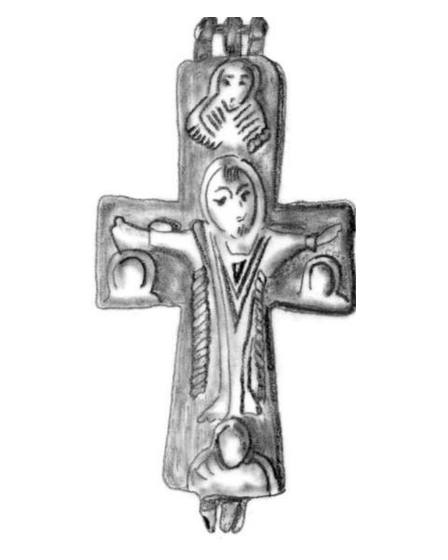
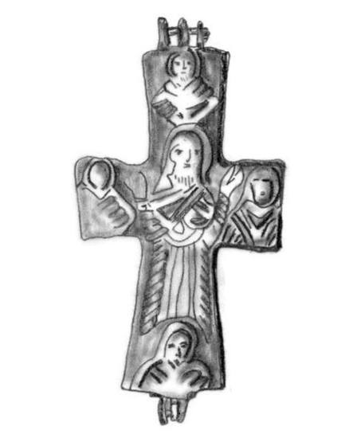

Catalog › CE-0321 · COS2022-IA-4
Encolpion bivalv de bronz, Dăbâca, repertoriu IA 3.4
sec. X–XI (901–1100) · Dăbâca, jud. Cluj, România
double-sided reliquary cross (enkolpion), bronz; c. X–XI (901–1100); found at Dăbâca, jud. Cluj, România.




Identificare
- Categorie
- Encolpion bivalv (relicvar)
- Material
- Bronz
- Tehnică
- Turnare în relief
- Dimensiuni
- Î 64 × L 40 × Gr 13 mm
Iconografie
- Avers
- Răstignirea (Hristos în colobium)
- Descriere avers
- Descrierea tipului IA, după autor: Hristos răstignit, cu capul ușor plecat spre dreapta, îmbrăcat în colobium căzut în falduri până la glezne, picioarele desculțe; la capetele celor patru brațe ale crucii, busturile a patru personaje biblice, identificate în unele cazuri cu Sfânta Maria și Sf. Ioan Evanghelistul. Pe această piesă: Mântuitorul este înfățișat cu barbă, cu mânecile veșmântului până în zona încheieturii mâinilor; marginile veșmântului sunt împodobite cu un ornament în formă de torsadă (Pl. 2/1a).
- Revers
- Maica Domnului Orantă; Evangheliști în medalioane
- Descriere revers
- Descrierea tipului IA, după autor: Sfânta Maria în poziție orantă, în veșmânt care acoperă complet trupul; la extremitățile celor patru brațe, busturile celor patru evangheliști. Pe această piesă: Marginile mamphorium-ului sunt împodobite cu un ornament în formă de torsadă (Pl. 2/1b).
Datare și atribuire
- Datare
- sec. X–XI (901–1100)
- Tipologie
- Cosma 2022, tip IA
Descoperire
- Localitate
- Dăbâca
- Regiune
- jud. Cluj
- Țară
- România
- Context
- Descoperire izolată
- Coordonate
- 46.9698° N, 23.6746° E
- Precizia locului
- Doar localitatea
Păstrare și referințe
- Bibliografie
- C. Cosma, Tipuri de cruci relicvar bizantine din bronz cu figuri în relief, descoperite pe teritoriul României, în „Crisia”, LII, 2022, p. 111–140 (studiu p. 111–129, planșe p. 130–140) [Cosma 2022], p. 121, repertoriu IA 3.4, reprodusă la Pl. 2/1a-b (p. 131). Piesa citată în repertoriu după: N. Gudea, C. Cosma, Crucea relicvar descoperită la Dăbâca. Observații privind tipologia și cronologia crucilor relicvar bizantine din bronz, cu figuri în relief, descoperite pe teritoriul României, în „Ephemeris Napocensis”, VIII, 1998, p. 273–303 [Gudea/Cosma 1998].
- Figura
- Pl. 2/1a-b
- Planșe
- Cosma 2022, p. 131
- Observații
- Descoperire întâmplătoare, fără context stratigrafic, într-un loc apropiat de fortificația din Evul Mediu timpuriu de la Dăbâca; singura piesă din Transilvania din repertoriul autorului. Pl. 2 mai cuprinde crucea desfăcută și o vedere laterală (nu sunt decupate). Colecția și inventarul nu sunt date în sursă. Coordonate: ale localității (aproximative), nu date în sursă. Număr în repertoriul autorului: 3.4 (tip IA).
Citare: Corpus Encolpiorum, CE-0321, Encolpion bivalv de bronz, Dăbâca, repertoriu IA 3.4, https://vitaliejosanu1979-ux.github.io/primul-meu-proiect/piese/COS2022-IA-4/ (accesat 2026-10-17).